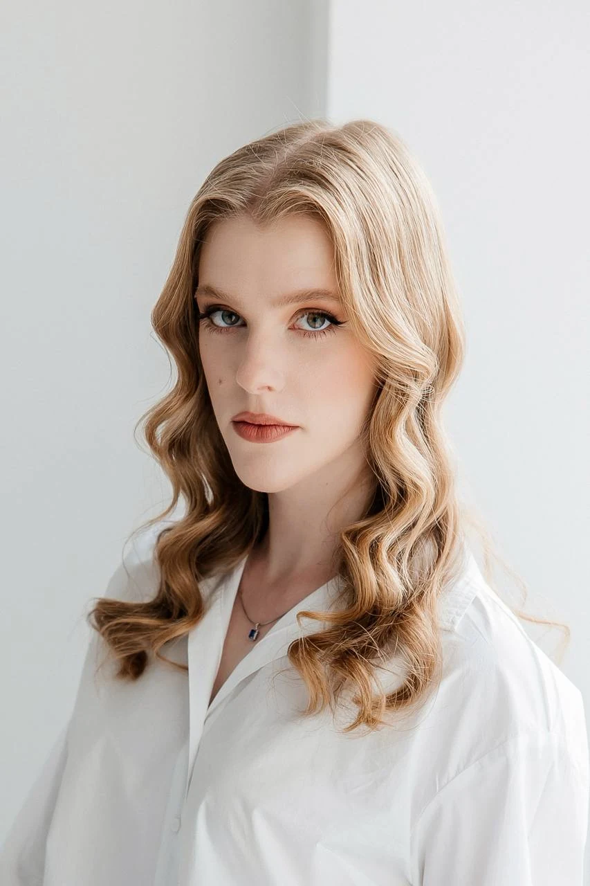
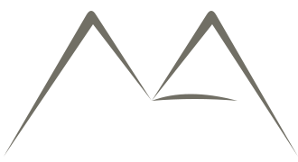

01 / ВИБРАНИЙ ПРОЄКТ
Забуті смаки
Кулінарна подорож Україною у форматі настільної гри. Ілюстрована карта, картки страв і пакування об’єднані в теплий, впізнаваний світ.
Графічна дизайнерка · Ілюстраторка · Моушн-дизайнерка
Я — Анастасія Степаненко. Працюю з графічним дизайном, ілюстрацією та анімацією. Надаю ідеям форму, характер і рух.
Переглянути роботи
Кулінарна подорож Україною у форматі настільної гри. Ілюстрована карта, картки страв і пакування об’єднані в теплий, впізнаваний світ.
Трохи про мене

Я — графічна дизайнерка, ілюстраторка й моушн-дизайнерка. Створюю візуальні образи — від окремого знака та авторської ілюстрації до графіки в русі.
У моєму портфоліо — брендинг, плакати, шрифтові композиції та книжкова графіка. Поєдную 2D- і 3D-графіку, експериментую з матеріалами й техніками та створюю ілюстровані світи для ігрових проєктів.
Черкаський державний технологічний університет
Графічний дизайн
ХДАДМ
Мультимедійний дизайн
Напрями роботи
Логотипи, фірмовий стиль і візуальні системи.
Авторські образи для книг, плакатів та ігрових проєктів.
Афіші, книжкове оформлення й пакування.
Анімація та графіка в русі.